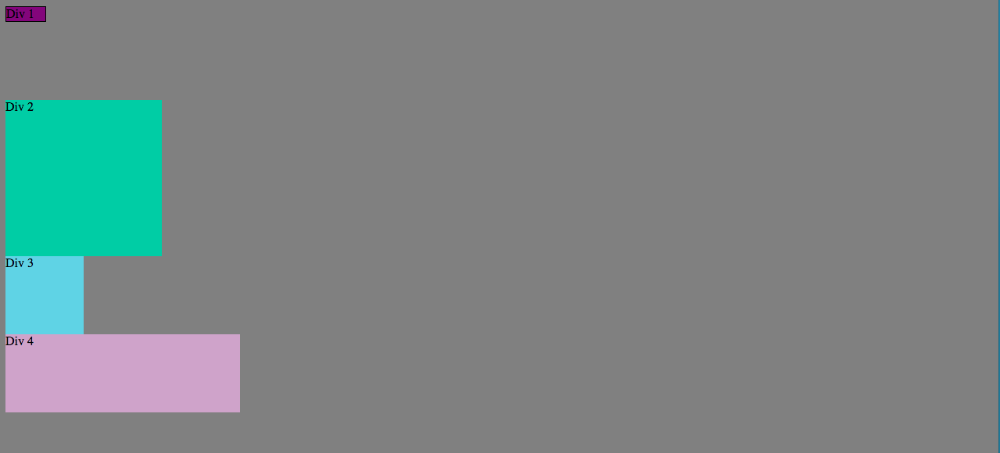
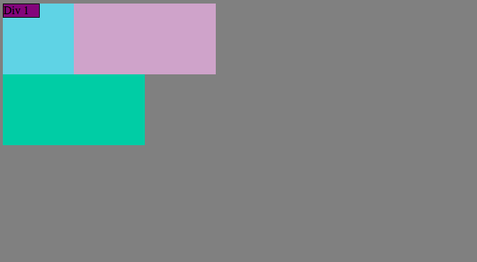
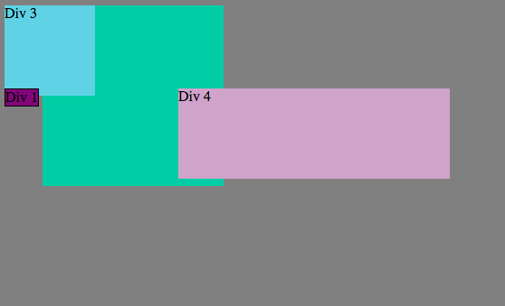

Claire Schlessinger
Left Hand Yellow, Right Foot Blue: Positioning
A breakdown of CSS positioning property values
July 19, 2015
An essential property in your CSS toolkit is the one that positions elements, kindly named the "position" property. It's also one of the trickier ones to understand, so let's break it down.
Static
This is how your elements get positioned by default if you don't specify a different value (therefore this is the same as if you specify "initial"). This is how things would flow into place in order based on the DOM. This is how these for divs come together with their positions all set to static:
Note that Div 1 has a margin-bottom set, so Div 2 just scootches in at the next available position
Fixed
Fixed positioning is used for placing elements relative to the browser window. It's good for things like a sticky navigation bar or a sidebar or footer — anything that you want to have stay in that same exact position, despite scrolling. This is how all of these divs appear when in a fixed position and no top or left value determining how far away from the browser edge they should be. See how they all overlap with each other starting in the top left corner? Without margins or padding or offset to specify where they should fall in relation to the window, they all go to the same place.
Relative
Relative positioning is used for arranging pieces around each other. This interacts closely with the "display" property, which determines whether an element will take up the whole line, share a line, or retain its size. This is how the four divs line up when set to "display: inline-block" and "position: relative" with some right margin added to the first div. See how everything else respects that and flows into the next available position.

Absolute
Absolutely positioned elements are placed in relation to their closest relatively positioned parent item. It is not subject to the normal flow of the page and doesn't make room for surrounding elements. These absolutely positioned divs overlap with each other and are positioned according to the offset properties, such as top and left.
